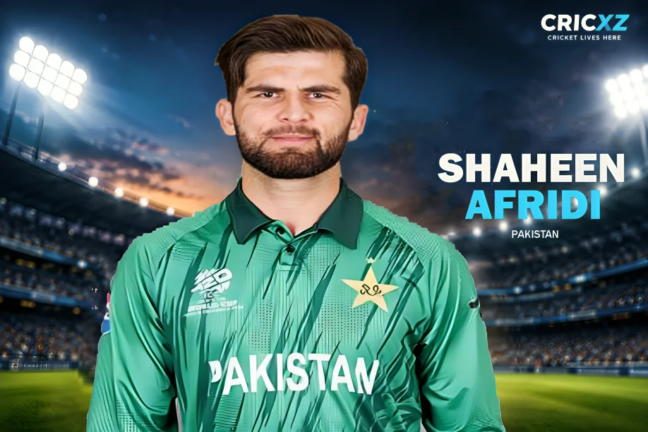

Test
- Matches
- 35
- Bowling innings
- 58
- Wickets
- 135
- Bowling average
- 26.70
- Economy
- 3.10
- Strike rate
- 51.60
- BBI
- 6/51
- BBM
- 10/94
- Five-wicket innings
- 4
- Ten-wicket matches
- 1

Shaheen Afridi is Pakistan's premier strike bowler, renowned for his lethal swinging yorkers and early breakthroughs. Across Tests, ODIs, and T20Is, the tall left-arm fast bowler has established himself as a global superstar and a big-match player.
In the high-octane Gold Medal Match against India, Shaheen Afridi demonstrated his big-match temperament by breaking crucial partnerships. Leading the pace attack, he finished with impressive figures of 3/35 in his 4 overs, bringing his T20I career wicket tally to 118 and restricting the dangerous Indian batting lineup in the death overs.
Career statistics updated: 3 October 2026 (Includes IND vs PAK Asian Games Final)
Primary statistics source: PCB / ICC / Live Match Data
As of October 2026, Shaheen Afridi remains one of the most feared new-ball bowlers in world cricket. His ability to bring the ball back into right-handers at extreme pace has resulted in numerous devastating first-over spells across international cricket.
He has collected 135 Test wickets, 130 ODI wickets, and an updated 118 T20I wickets, making him a multi-format match-winner. Afridi was instrumental in leading Pakistan to the Asian Games 2026 Men's T20 Final against India, ensuring the rivalry lives up to its global billing with his 3-wicket haul in the summit clash.
In 2021, he achieved global superstardom by becoming the youngest bowler to win the prestigious Sir Garfield Sobers Trophy for the ICC Men's Cricketer of the Year.
3 December 2018
Against New Zealand at Sheikh Zayed Stadium, Abu Dhabi.
21 September 2018
Against Afghanistan at Sheikh Zayed Stadium, Abu Dhabi.
3 April 2018
Against West Indies at National Stadium, Karachi.
Spearheaded Pakistan's bowling attack to secure a spot in the Gold Medal match of the 2026 Asian Games, taking 3/35 in the final against India.
Became the first Pakistani and the youngest player ever to win the Sir Garfield Sobers Trophy.
Led the Lahore Qalandars to back-to-back Pakistan Super League (PSL) titles, showcasing his leadership skills.
Took 6/35 against Bangladesh in the 2019 World Cup, becoming the youngest bowler to take a five-wicket haul in World Cup history.
Career statistics updated: 3 October 2026. T20I stats are dynamically updated to reflect his live performance in the Asian Games Final.